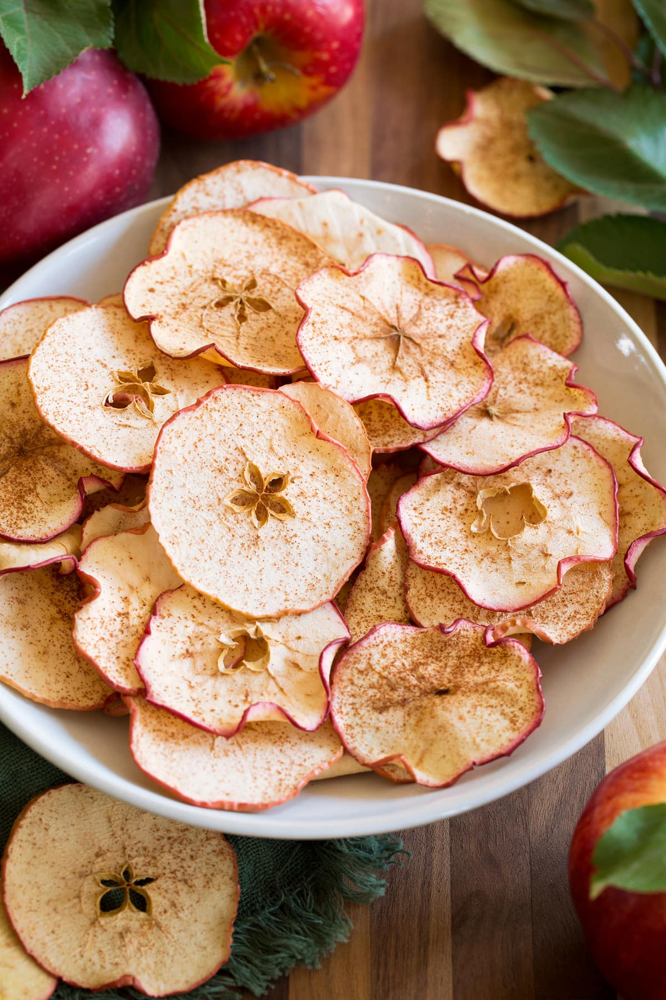
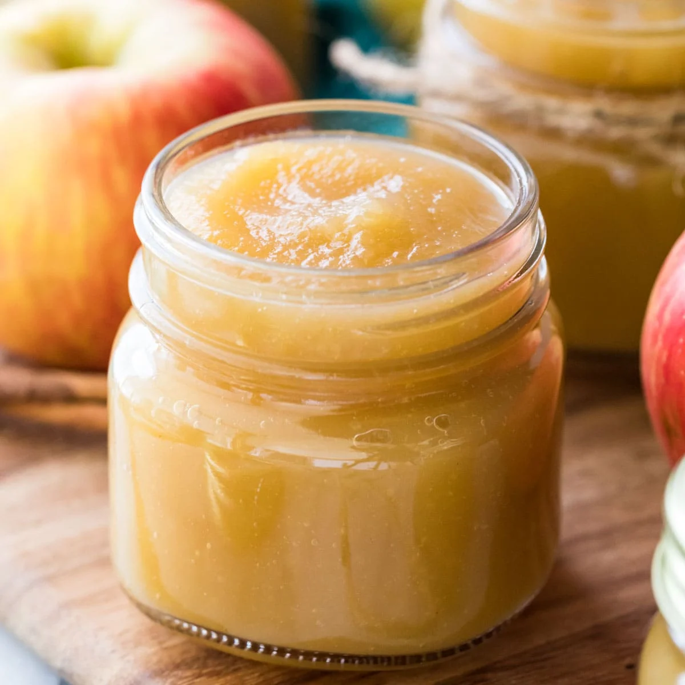
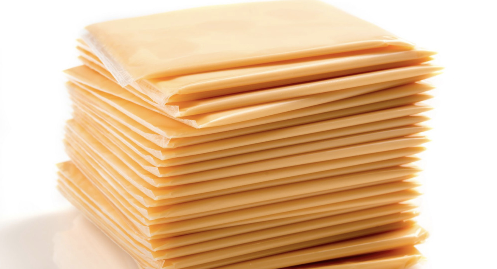
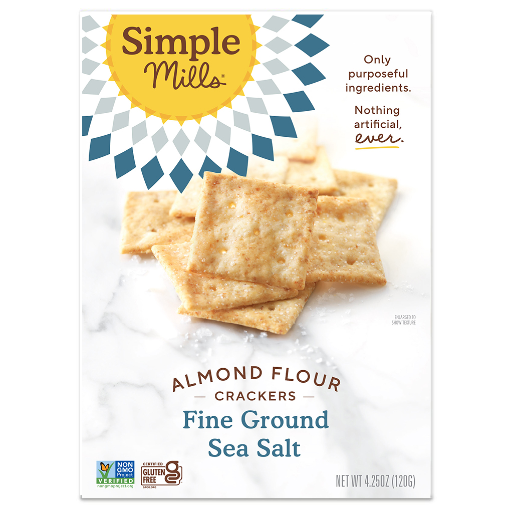
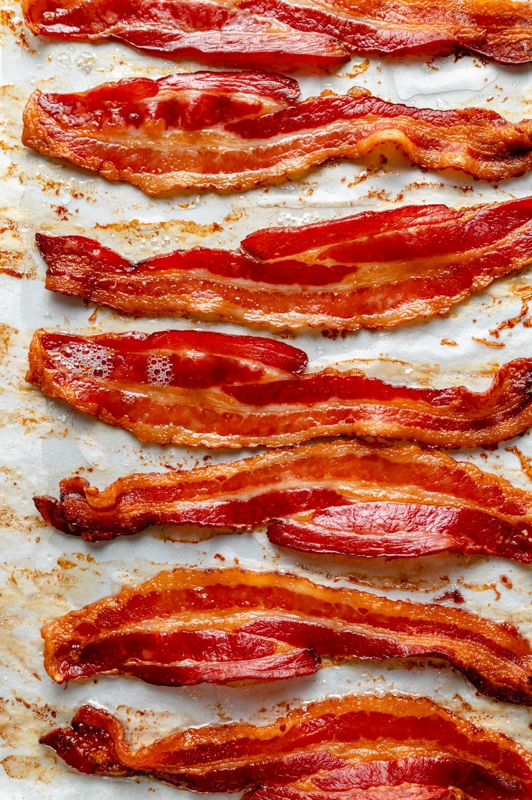
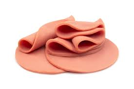
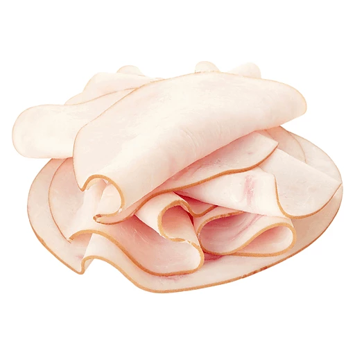
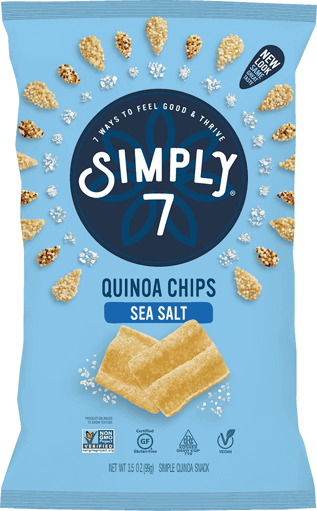
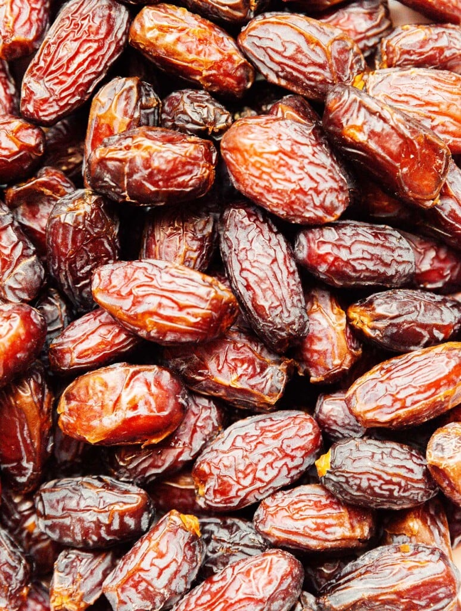
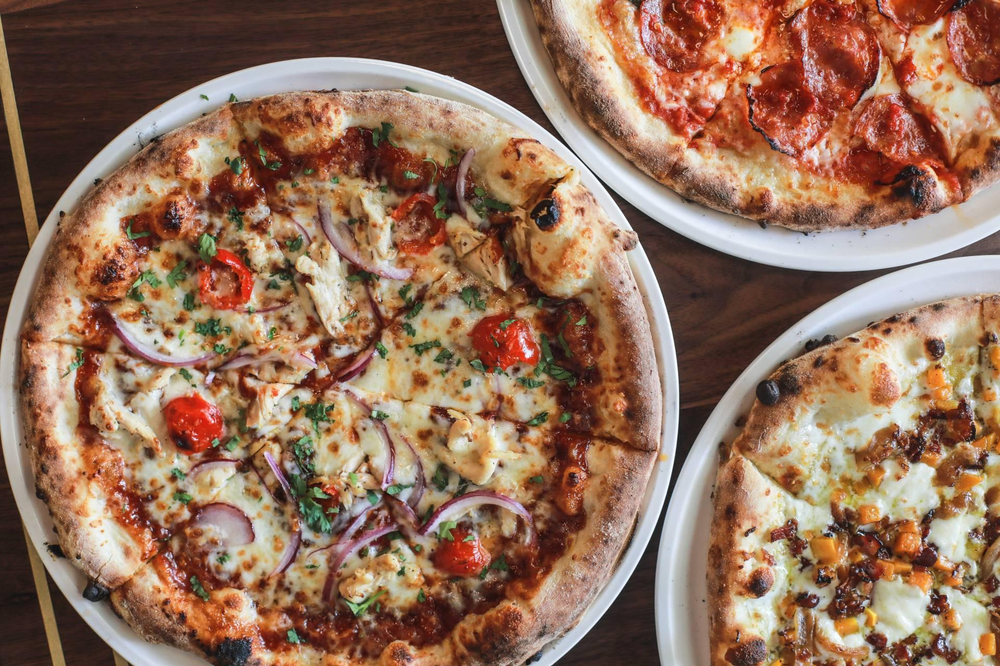

Home
About
SwapIt
Share an Alternative
Contact Us
SwapIt
*Click on alternatives to see nutritional information
All
Apple Pie
Alternative(s)
Apple Crisps

No Sugar Added Applesauce

American Cheese

Alternative(s)
Cheddar Cheese Slice
Vegan American Cheese
Animal Crackers
Alternative(s)
Almond Crackers

Bacon

Alternative(s)
Turkey Bacon
Bologna

Alternative(s)
Turkey Slices

Chicken Slices
Bread
Alternative(s)
Gluten-Free Bread
Rice Cakes
Chips
Alternative(s)
Kale Chips
Popcorn
Quinoa Chips

Candy
Alternative(s)
Dates

Grapes
Donuts
Alternative(s)
Baked Donuts
French Fries
Alternative(s)
Sweet Potato Fries
Carrot Fries
Pizza

Alternative(s)
Cauliflower Crust Pizza
Gluten-Free Pizza
Not all letters yield results.